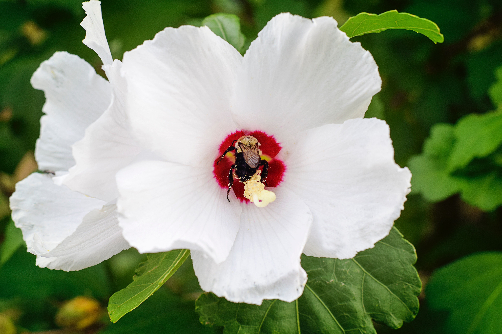

무궁화란 무엇인가?
무궁화는 제법 큰 편이며,[3] 꽃잎은 흰색 내지는 분홍색을 띄며 5장이 잔처럼 벌어진다. 가운데 붉은 테(일명 '단심')가 있고 거기서 노란 수술이 솟아있는 것이 특징이다. 보편적으로 흰 꽃이 유명하지만, 본래 무궁화는 붉은 빛이 도는 꽃이고 오늘날의 흰 무궁화는 한국에서 개량된 것이라 한다. 구조로 따지면 양성 완전화이다.
기본적으로 생명력이 강해서 어지간히 척박한 환경에도 적응하며 번식도 다양하게 시킬 수 있으며, 이식력이 강하고 맹아력이 매우 강해서 이렇게 두목작업을 해도 가지가 잘 자란다. 목적에 맞추어서 어떻게 수형을 잡을 것인지 선택하는 것이 좋다. 다만 모든 장미목 식물들이 그렇듯이 관리를 잘 안 해주면 벌레가 꼬이기 쉬운데 주로 진딧물이 많이 생긴다. 이걸 근거로 들어 지저분한 꽃이라면서 국화를 바꾸자는 주장도 있었고, 십수년 전에는 한 국회의원이 이런 이야기를 한 적도 있었다.